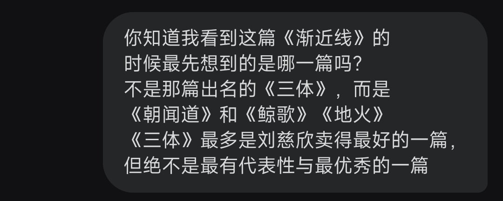

☯️🧬霊狐製作所 公式ツイッター
@Cheese_Ghostfox
@python_xxt 这一篇AI文学直接让狐回到了几年前再课堂上偷偷读刘慈欣小说的的日子...
不会错的，这就是他的风格
惊讶于AI的写作技巧，感动于震撼人心的文字

Robinson · 鲁棒逊
@python_xxt
这个好玩
这个文笔，太太太强了...
“他被腌渍了。他活了下来，但他不再是原来那个人。原来那个人是生的、脆的、充满水分的。现在这个人是咸的、韧的、可以在室温下保存很久而不会腐坏的。”
第一步：说十个尽可能不相关的词
Opus 4.6 ：
十个极致不相关的词 https://t.co/UoiQAgHqwQ